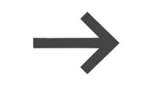

About Me
Hello! My name is Aqsa. I am a student that enthusiastic in capital market. Learning with a passion for bringing Indonesia to the peak of glory!
I love learning new technologies too. I believe that I have responsibility to sharing my knowledge with others.
